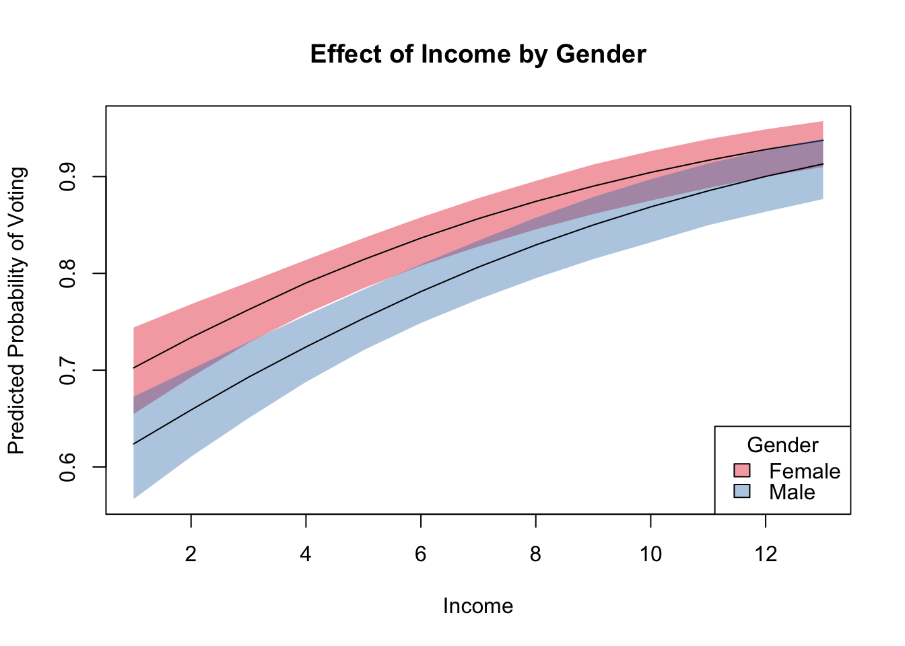

library(foreign)
library(regsim)bes <- read.dta("http://uclspp.github.io/PUBLG100/data/bes.dta")
bes$Gender <- factor(bes$Gender, levels = c(0, 1), labels = c("Female", "Male"))model <- glm(Turnout ~ Income + polinfoindex + Influence + Gender + Age +
edu15 + edu17 + edu18 + edu19plus + in_school + in_uni,
family = binomial,
data = bes)
summary(model)##
## Call:
## glm(formula = Turnout ~ Income + polinfoindex + Influence + Gender +
## Age + edu15 + edu17 + edu18 + edu19plus + in_school + in_uni,
## family = binomial, data = bes)
##
## Deviance Residuals:
## Min 1Q Median 3Q Max
## -3.0011 -0.6358 0.4995 0.7267 2.0876
##
## Coefficients:
## Estimate Std. Error z value Pr(>|z|)
## (Intercept) -3.90484 0.22364 -17.461 < 2e-16 ***
## Income 0.15397 0.02138 7.201 5.96e-13 ***
## polinfoindex 0.25066 0.02424 10.339 < 2e-16 ***
## Influence 0.21015 0.01930 10.889 < 2e-16 ***
## GenderMale -0.35511 0.08203 -4.329 1.50e-05 ***
## Age 0.04873 0.00313 15.567 < 2e-16 ***
## edu15 -0.33626 0.11213 -2.999 0.00271 **
## edu17 0.35910 0.15907 2.257 0.02398 *
## edu18 0.14084 0.15221 0.925 0.35479
## edu19plus 0.01483 0.12997 0.114 0.90914
## in_school 1.12978 0.40270 2.805 0.00502 **
## in_uni -0.05110 0.27029 -0.189 0.85006
## ---
## Signif. codes: 0 '***' 0.001 '**' 0.01 '*' 0.05 '.' 0.1 ' ' 1
##
## (Dispersion parameter for binomial family taken to be 1)
##
## Null deviance: 4763.0 on 4160 degrees of freedom
## Residual deviance: 3979.9 on 4149 degrees of freedom
## (630 observations deleted due to missingness)
## AIC: 4003.9
##
## Number of Fisher Scoring iterations: 5x <- list(
Gender = c("Male", "Female")
)
sim <- regsim(model, x)
summary(sim, detail = TRUE, rotate = FALSE)## Income polinfoindex Influence GenderMale Age edu15 edu17 edu18
## p1 5.321557 5.409277 3.608508 1 50.91853 0 0 0
## edu19plus in_school in_uni
## p1 0 0.008061408 0
##
## mean sd 2.5% 50% 97.5%
## p1 0.7619005 0.01582821 0.7298459 0.7618069 0.7910449
## ------------------------------------------------
##
## Income polinfoindex Influence GenderMale Age edu15 edu17 edu18
## p2 5.321557 5.409277 3.608508 0 50.91853 0 0 0
## edu19plus in_school in_uni
## p2 0 0.008061408 0
##
## mean sd 2.5% 50% 97.5%
## p2 0.8200599 0.01352652 0.792911 0.8198881 0.8450784
## ------------------------------------------------
##
## First Differences:
##
## mean sd 2.5% 50% 97.5%
## fd 0.05815937 0.01353075 0.03152555 0.05808976 0.0850349summary(sim, detail = TRUE, rotate = TRUE)## Profile 1
## Income 5.321557318
## polinfoindex 5.409276616
## Influence 3.608507570
## GenderMale 1.000000000
## Age 50.918529200
## edu15 0.000000000
## edu17 0.000000000
## edu18 0.000000000
## edu19plus 0.000000000
## in_school 0.008061408
## in_uni 0.000000000
##
## mean sd 2.5% 50% 97.5%
## p1 0.7619005 0.01582821 0.7298459 0.7618069 0.7910449
## ------------------------------------------------
##
## Profile 2
## Income 5.321557318
## polinfoindex 5.409276616
## Influence 3.608507570
## GenderMale 0.000000000
## Age 50.918529200
## edu15 0.000000000
## edu17 0.000000000
## edu18 0.000000000
## edu19plus 0.000000000
## in_school 0.008061408
## in_uni 0.000000000
##
## mean sd 2.5% 50% 97.5%
## p2 0.8200599 0.01352652 0.792911 0.8198881 0.8450784
## ------------------------------------------------
##
## First Differences:
##
## mean sd 2.5% 50% 97.5%
## fd 0.05815937 0.01353075 0.03152555 0.05808976 0.0850349x <- list(
Gender = c("Male", "Female"),
Income = 1:13
)
sim <- regsim(model, x)
summary(sim)## Income polinfoindex Influence GenderMale Age edu15 edu17 edu18
## 1 1 5.409277 3.608508 1 50.91853 0 0 0
## 2 1 5.409277 3.608508 0 50.91853 0 0 0
## 3 2 5.409277 3.608508 1 50.91853 0 0 0
## 4 2 5.409277 3.608508 0 50.91853 0 0 0
## 5 3 5.409277 3.608508 1 50.91853 0 0 0
## 6 3 5.409277 3.608508 0 50.91853 0 0 0
## 7 4 5.409277 3.608508 1 50.91853 0 0 0
## 8 4 5.409277 3.608508 0 50.91853 0 0 0
## 9 5 5.409277 3.608508 1 50.91853 0 0 0
## 10 5 5.409277 3.608508 0 50.91853 0 0 0
## 11 6 5.409277 3.608508 1 50.91853 0 0 0
## 12 6 5.409277 3.608508 0 50.91853 0 0 0
## 13 7 5.409277 3.608508 1 50.91853 0 0 0
## 14 7 5.409277 3.608508 0 50.91853 0 0 0
## 15 8 5.409277 3.608508 1 50.91853 0 0 0
## 16 8 5.409277 3.608508 0 50.91853 0 0 0
## 17 9 5.409277 3.608508 1 50.91853 0 0 0
## 18 9 5.409277 3.608508 0 50.91853 0 0 0
## 19 10 5.409277 3.608508 1 50.91853 0 0 0
## 20 10 5.409277 3.608508 0 50.91853 0 0 0
## 21 11 5.409277 3.608508 1 50.91853 0 0 0
## 22 11 5.409277 3.608508 0 50.91853 0 0 0
## 23 12 5.409277 3.608508 1 50.91853 0 0 0
## 24 12 5.409277 3.608508 0 50.91853 0 0 0
## 25 13 5.409277 3.608508 1 50.91853 0 0 0
## 26 13 5.409277 3.608508 0 50.91853 0 0 0
## edu19plus in_school in_uni mean sd 2.5% 50%
## 1 0 0.008061408 0 0.6204818 0.02890418 0.5641305 0.6197992
## 2 0 0.008061408 0 0.7001204 0.02475577 0.6528174 0.7005122
## 3 0 0.008061408 0 0.6560590 0.02469981 0.6083253 0.6558056
## 4 0 0.008061408 0 0.7315077 0.02081161 0.6923363 0.7317245
## 5 0 0.008061408 0 0.6899803 0.02118860 0.6489180 0.6898176
## 6 0 0.008061408 0 0.7607230 0.01771291 0.7281824 0.7605662
## 7 0 0.008061408 0 0.7219653 0.01857008 0.6856288 0.7217777
## 8 0 0.008061408 0 0.7876577 0.01554075 0.7579334 0.7875330
## 9 0 0.008061408 0 0.7518116 0.01691854 0.7195406 0.7518339
## 10 0 0.008061408 0 0.8122740 0.01424216 0.7843123 0.8124795
## 11 0 0.008061408 0 0.7793948 0.01612655 0.7485979 0.7794104
## 12 0 0.008061408 0 0.8345952 0.01362338 0.8079155 0.8344647
## 13 0 0.008061408 0 0.8046629 0.01593663 0.7731253 0.8046488
## 14 0 0.008061408 0 0.8546936 0.01342111 0.8270409 0.8550271
## 15 0 0.008061408 0 0.8276268 0.01605456 0.7968036 0.8274308
## 16 0 0.008061408 0 0.8726785 0.01339771 0.8459383 0.8729050
## 17 0 0.008061408 0 0.8483487 0.01624555 0.8165595 0.8484910
## 18 0 0.008061408 0 0.8886851 0.01338978 0.8621155 0.8891500
## 19 0 0.008061408 0 0.8669301 0.01636289 0.8349761 0.8669912
## 20 0 0.008061408 0 0.9028637 0.01330700 0.8764106 0.9034991
## 21 0 0.008061408 0 0.8835004 0.01633370 0.8517326 0.8839144
## 22 0 0.008061408 0 0.9153721 0.01311139 0.8890813 0.9164065
## 23 0 0.008061408 0 0.8982063 0.01613468 0.8667758 0.8985069
## 24 0 0.008061408 0 0.9263685 0.01279692 0.9006236 0.9276209
## 25 0 0.008061408 0 0.9112031 0.01577171 0.8803065 0.9117269
## 26 0 0.008061408 0 0.9360069 0.01237477 0.9105157 0.9372242
## 97.5%
## 1 0.6740108
## 2 0.7477587
## 3 0.7022191
## 4 0.7726076
## 5 0.7292627
## 6 0.7955823
## 7 0.7569024
## 8 0.8182678
## 9 0.7842534
## 10 0.8398762
## 11 0.8114676
## 12 0.8606024
## 13 0.8362192
## 14 0.8801728
## 15 0.8581645
## 16 0.8978854
## 17 0.8790734
## 18 0.9149877
## 19 0.8979798
## 20 0.9277489
## 21 0.9145376
## 22 0.9390660
## 23 0.9290074
## 24 0.9492350
## 25 0.9406633
## 26 0.9573613plot(sim, ~Income + GenderMale,
ylim = c(0.5, 1),
bty = "n",
ylab = "Predicted Probability of Voting",
main = "Effect of Income by Gender")